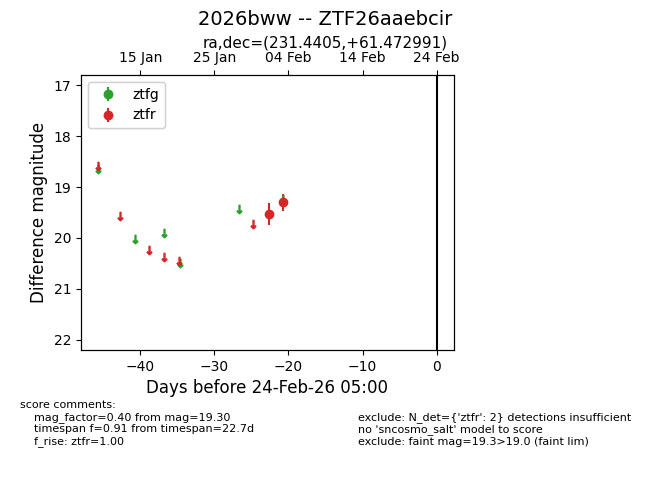
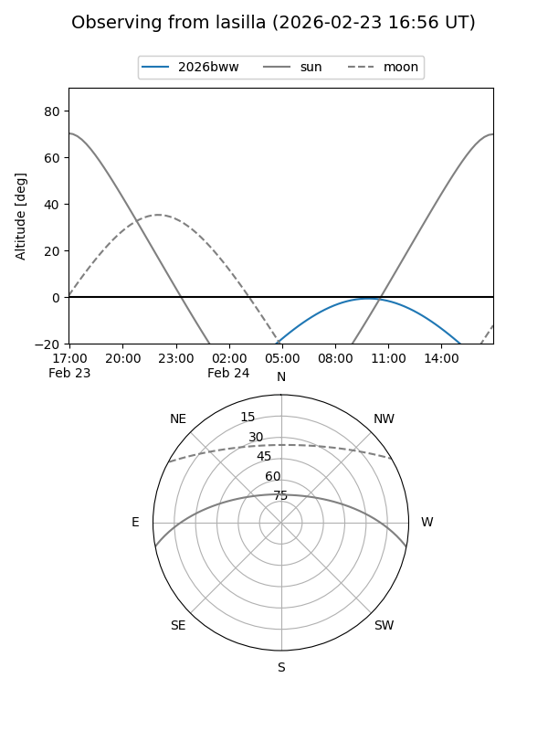
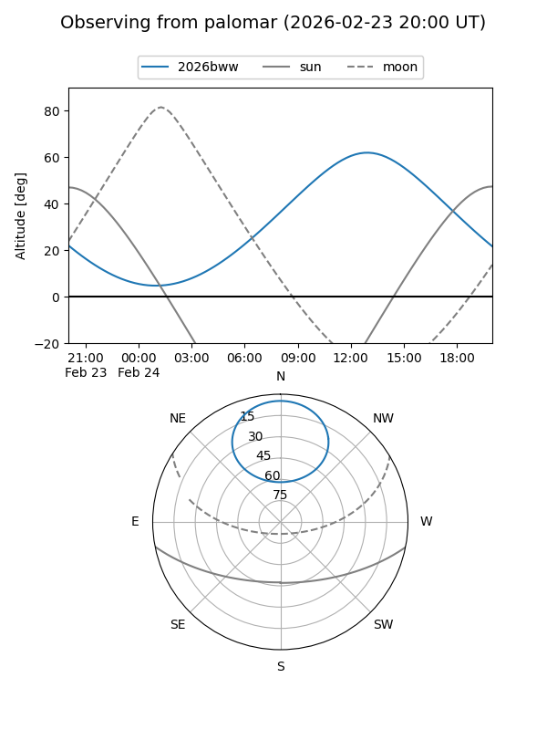

2026bww
Target 2026bww at 2026-02-24 09:08
Aliases and brokers:
FINK: link
Lasair: link
ALeRCE: link
TNS: link
YSE: link
alt names
ZTF26aaebcir (ztf,fink_ztf)
2026bww (tns,yse)
Coordinates:
equatorial (ra, dec) = 231.4405,+61.47299
equatorial (HMS+DMS) = 15:25:45.73,+61:28:22.77
galactic (l, b) = (96.9715,+47.12876)
Flags:
Photometry:
last ztfr=19.30
2 ztfr detections
Lightcurve

Visibility


Additional plots